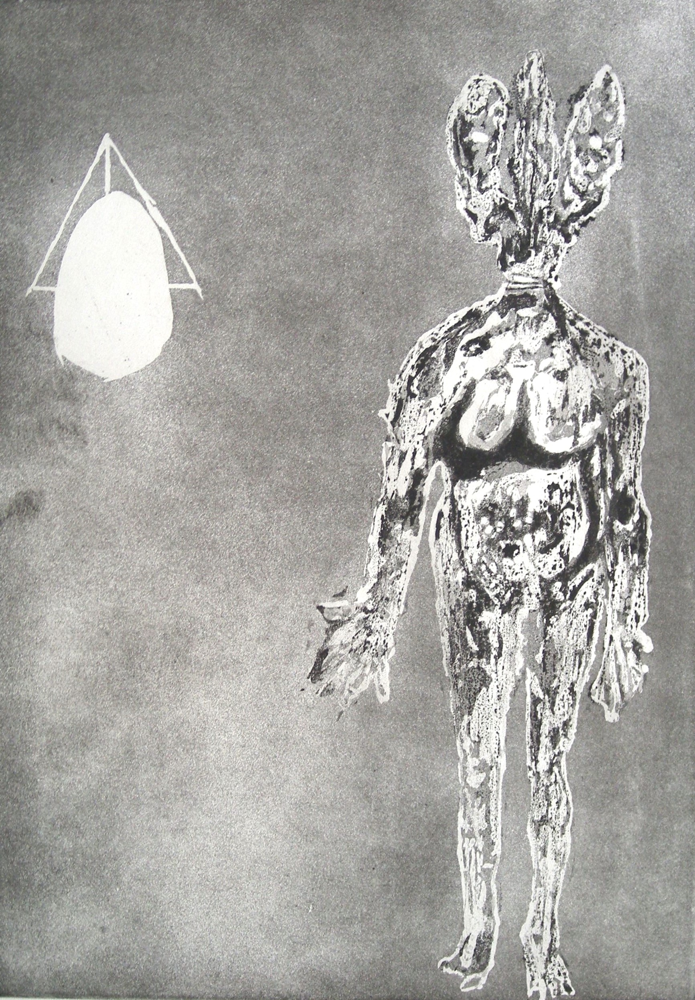

Germaine Richier
1902 – 1959
Artist Biography
Germaine Richier was born in Grans, France and studied sculpture at the Ecole des Beaux Arts in Montpellier. She started with a classical approach but began sculpting animal-human hybrid figures, later incorporating vegetation too, that became increasingly anguished. She achieved rapid success and throughout her lifetime was highly regarded. Richier showed at both Venice and Sao Paolo biennales, had a number of exhibitions at the Museum of Modern Art (MOMA), New York and in 1956 became the first female sculptor to have a solo exhibition at the National Museum of Modern Art in Paris. Her work is held in the world’s top public modern art galleries, including Tate Modern, the Guggenheim and MOMA, and she was the subject of a major retrospective in 2023 at the Centre Pompidou in Paris.

L’Hydre, 1954